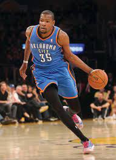
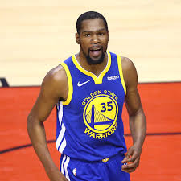
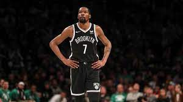
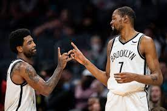
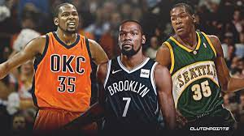

In late September 2019, Kevin Durant climbed the stairs to the rooftop of the Brooklyn Nets’ training facility and stared out across his new city. From his perch atop the eight-story building in the Sunset Park neighborhood, he could see One World Trade Center and the rest of Lower Manhattan. Durant, dressed in a black no. 7 Nets jersey for the first time for media day, felt at home.
“I looked at it as a new beginning,” he tells me, slumping into an office chair a few hours before a recent game against the Trail Blazers. “There’s a certain level of pride that you have as a basketball player when you’re playing in the city of New York.”
Durant had signed with the Nets as a free agent just two months earlier, joining forces with his best friend Kyrie Irving, but he already felt far removed from Golden State. Durant had helped further the Warriors’ dynasty, bringing them two titles and another NBA Finals appearance, but the ending was sour; speculation about whether he might depart loomed over his final season, and then a ruptured Achilles finished it for good. Brooklyn, he thought, would be a fresh start.
But his Nets tenure arguably has been more chaotic. After Durant sat out to rehab his Achilles in his first season—one disrupted by a global pandemic—Brooklyn traded for James Harden, only to come a shoe size away from beating the Bucks in the postseason.
Last fall, a New York City mandate for performers barred Irving from playing home games until he was vaccinated, and the Nets sent him away from the team. In January, the Nets brought Irving back, but Durant soon sprained his knee, leaving a team picked to win the East heavily reliant on Harden and deep reserves. And last month, Harden, disenchanted with Irving’s limited availability and the overall direction of the team, forced a trade to the 76ers; in exchange, the Nets received a package headlined by Ben Simmons, who even after ending his stalemate with Philadelphia has yet to play a game, now because of back issues. Irving, finally, was allowed back on his home floor last week.
Through it all, though, Durant has remained poised, almost Zen. “I think just Kevin staying calm through all that is really important for the group to see,” Nets coach Steve Nash tells me.
Sure, Durant would’ve preferred Irving to have been out there alongside him earlier in the season. And, yes, it would’ve been great if things had worked out with Harden. But Durant says he doesn’t let others’ decisions disrupt his personal journey. “It’s just experience, man,” he says. “Shit, it’s more stressful trying to be upset or have these emotions over something that I can’t control.”
The move to Brooklyn has brought with it new challenges and new opportunities. But it’s also given him a new perspective.
“Before, I used to worry about expectations, but now, I’m solidified and confident in what I bring,” he says. “I just try to focus on me the most as I can, the best I can.”
Durant, now 33 and in his 15th NBA season, still puts the work into his craft to win titles and earn individual accomplishments, but that’s not all he’s chasing anymore.
“Us winning a title, that would be amazing. That would be incredible. But that’s not the only reason why I play basketball,” he says. “I want to develop every day and I truly like this activity, you know what I’m saying? I like getting up knowing that I’m going to go play, and that’s really it for me. The championship and scoring 30 and the level that I expect to be at, that’s because I work to get there, but I just simply like the activity.”
Two days after the game against Portland, a small film crew arrives at Durant’s apartment in the bustling Chelsea district. On the outside, the rented property looks nondescript. But the doors open to reveal a five-story fortress, complete with its own lobby and a wine cellar full of Pellegrino sparkling water. Mics, lights, and cameras are set up on the second floor, and an hour later, Durant appears via an elevator from the fifth-floor game room, having just logged a few games of NBA 2K with the homies.
The crew is here to record The ETCs With Kevin Durant, a biweekly podcast in which Durant talks about, well, whatever’s on his mind.
“I’m still fine-tuning my movements out here as a human being, so when other great people want to sit down and talk and let me steal some of their philosophies on life, then I’m going to do it,” he tells me. “It’s just a matter of me appreciating what they bring to the earth and wanting to learn from them as well.”
Durant and business partner Rich Kleiman launched the podcast in late 2020 as part of their Boardroom Podcast Network. For Durant, the show is a vehicle to pull back the curtain, both on the lives of athletes and on the business end of sports. But more than anything, it’s an attempt to just be one of the guys.
“How people look at me, I can’t control. I know when I walk down the street, people may be looking at me like I’m a superhero,” he says. “But I look at it as it’s just like, ‘Yo, I’m just a normal person trying to blend in.’ I keep that approach and it’s just better for me to operate in that space.”
When Durant arrived in the Bay Area, he wanted to blend in. He wanted to assimilate into the Warriors offense, which emphasized ball movement and sharing, and he didn’t want to outshine anyone in the locker room. But he felt like the media, in particular, singled him out.
The team was presented, he says, as “KD and the Warriors.”
“I was expecting—and maybe that’s my fault—I was expecting the beat writers, whoever was on the beat there, whoever covered the team, to integrate me into the Warriors’ way of doing things,” he says. “Because I never tried to step outside of that and make that situation bigger and make it all about me. I just felt like I wanted to be a part of the group. There were plenty of times where obviously when it comes to media, I was separated from the group.”
Durant isn’t blameless. Throughout his Golden State tenure, he signed a series of contracts with early options to take advantage of the league’s soaring salary cap. But the lack of a long-term commitment made his free agency a perpetual hot topic. By his third season, reports began to emerge that Durant was flirting with the idea of going to New York, and that Golden State was nervous he’d do it. His clash with Draymond Green on the sideline during a game in Los Angeles also brought the simmering animosity to the fore.
Truth is, he did become isolated from the group. In the months before his last season, he moved from the East Bay, where most of his teammates resided, to a San Francisco high-rise. On team trips, teammates would play cards, while he’d be off by himself, sometimes making beats in the back of the plane. But to Durant, his demeanor was no different from those of other players.
"I just think I deserved a little bit more respect than that."
“For people to look at me and say I was malcontent or isolated or didn’t look happy, I’m like, ‘Yo, do you all see Klay every day? Did you all see how he walked in there?’ But that was just him and nobody ever bat an eye at him,” Durant says. “I loved it and I picked up on some of those things and how they approach the team-building and team bond. I’m like, ‘Oh, this is more my style.’ I was just adopting what the team was already doing."
“We all had our separate lives. We all had families,” he adds. “The Bay is huge. Draymond lived an hour and a half away from me, so does Steph, so does Shaun [Livingston]. When are we getting together? We’re around each other every day on the road. I think it’s healthy when you have that level of separation, when you get at home and like, ‘All right, you all go do your thing and I’m going to do mine.’”
Still, three years later, Durant feels the coverage of him was unfair.
“I just think I deserved a little bit more respect than that. I came out here and gave back money, sacrificed my name, and went out here and sacrificed my body every night to be the best that I can be. I just asked for a little bit more respect to wait until after the season than to badger me every day, all year with questions like that,” he says, referring to his free agency. “I thought it was unfair to me and the whole group to even think about anything that was going to happen after the year. It was unprofessional, in my opinion.”
Yet, despite his frustrations and his own forays into the media, Durant hasn’t written off reporters altogether. The NBA has tightened access to players and coaches during the pandemic, including disallowing journalists into locker rooms. Last month, commissioner Adam Silver suggested locker rooms may never open back up, citing privacy concerns. Durant disagrees with that approach.
“I think that’ll hurt the relationship between media and players,” he says. “That is the only way that you can build a relationship with somebody that’s going to be writing on you regardless.”
But then he offers a caveat: “It’s the ones that don’t say anything that come into the locker room, but they got the most to say in their column about what goes on in the locker room. You’re not being in a relationship with us, but you just eavesdropping in on a situation. That’s where the trust factor starts to get eliminated, where it’s like, ‘Well, who are we letting in here?’”
When Durant isn’t podcasting, he keeps the conversation going on social media. He has been criticized for being too online, and for his usage of burner accounts. But he says he’s on Twitter often, and he doesn’t plan on stopping anytime soon.
“It’s a community,” Durant says. “I feel like anybody here has a Twitter page, it’s a community and I use it to connect with a lot of people outside of just making jokes on there or sending memes. I’ll contact a lot of people on there that I probably wouldn’t have even got in contact with without social media. It definitely helps.”
It’s also where he met his cohost, Eddie Gonzalez. Shortly after his Golden State departure, Durant heard Gonzalez on a podcast ranting about how reasonable it was for Durant to leave the Warriors.
“The gist of it was I felt guys were making lifestyle choices in free agency,” Gonzalez says, “and I understood the real-world aspects of the decision.” Durant then followed Gonzalez on social, and their relationship blossomed. “We got to talking and chatting about other stuff,” Gonzalez says. “We like the same music. We like the same shows. We just had a lot in common and it turned into like, ‘Yo, how do we do something?’”
On most days when Durant is in town, Gonzalez will ride along to games with the two-time champion, chopping it up about music, basketball strategies, and even how Durant approaches life. Some of the conversations end up in the show. “I want people to see the guy that I see,” Gonzalez says. “Because I think that’s endearing and I think it’s powerful. It’s important for people to see that.”
Back at Durant’s house, Gonzalez and Durant talk for an hour, discussing everything from how he’s defended, to Dirk Nowitzki’s influence on his game, to how the latest episode of Snowfall left Durant disappointed. Then, around 9:30, Durant heads back up the elevator to play some more 2K, respond to some DMs, and get some shut-eye. He’s said all he has to say for today.
Three days later, after finishing his pregame routine in Memphis, Durant is greeted by the news he’s been hoping for since the fall: New York City Mayor Eric Adams will lift the mandate requiring local performers and athletes to be vaccinated against COVID-19 in order to perform at New York venues, clearing Irving to play home games.
“It’s a long time coming,” Durant told reporters. “It’s an exciting time for Brooklyn Nets fans and New York fans to see one of our own back on the floor at home.”
Irving says he began admiring Durant during his lone season at Duke. Irving appreciated Durant’s game, but also how humble he was.
“One thing that he always said was, ‘Working hard beats talent any day,’ and that was one of the things that I had written down in one of my notebooks,” Irving tells me. “I never thought that we’d be as close as we are today.”
By Irving’s sixth year in the NBA, the two were inseparable, taking trips to the Bahamas. They made a pact, along with DeAndre Jordan, at the 2016 Rio Olympics to team up together in the NBA, and openly flirted with the idea during the 2019 All-Star Game. And, in the summer of 2020, Irving helped Durant rekindle a friendship with former teammate James Harden.
Durant and Harden grew up in the NBA together in Oklahoma City, leading the Thunder to their only Finals appearance when they were in their early 20s. In the years after Harden was traded to Houston, they stopped talking. But their friendship was reignited when Harden, a few months removed from another disappointing postseason exit in Houston, was back home in Los Angeles, working out at the Sports Academy and contemplating his future. Irving and Durant were there, too, and by the end of the offseason, they agreed to play together.
Durant’s relationship with Harden began to blossom again. They went on a trip to Greece this past summer, and the guard twice reassured Durant that he’d sign an extension to stay in Brooklyn long term, according to league sources.
In October, Irving refused to be vaccinated, citing personal reasons. His decision meant he wouldn’t play for the first two months, leaving Harden, Nash, and Durant—all vaccinated—to routinely answer questions about his absence.
“People would say, ‘It’s as easy as you going to get something done,’” Irving says. “But if I don’t believe in it per se, that’s not anything that we disagreed on. And it wasn’t me not believing in the vaccine and me not believing in science or anything like that, but we just disagreed on my stance and my beliefs at that point.”
Irving would still check in on Durant, FaceTiming his pal to give updates or go over plays after losses, saying, “We’d win if I was out there with you guys.” Durant would offer support, balancing his duty as a team leader to keep Irving’s spirits high with his understandable irritation at a teammate who’d chosen not to be there for his team.
“I know he was frustrated,” Irving tells me. “We spoke about it.”
Harden’s arrival was supposed to give Durant a superteam that would rival even the best renditions of the Warriors. But after Durant suffered a knee injury this January, communication broke down again. Harden, frustrated by Irving’s part-time play and the mounting losses, began searching for a new residence. And while Harden and Durant drifted apart, Irving and Durant grew closer.
“We bonded over things beyond basketball,” Irving says. “Just really family, how we were raised, what we want to do in the future with our lives. I have kids, hopefully he has kids one day, and it’s really about being ready for our transition after this.”
“What you see is what you get with Kyrie,” Durant says. “I think he’s putting everything out on the table of who he is. There’s no hiding who he is. That’s the beauty of him, is that he’s fully transparent on how he feels to the world. It’s nothing to hide. You pretty much know who he is. I think that’s really the problem. A lot of people can’t accept who he is as a person.”
By the time Durant was back in the lineup, Harden was gone. Speaking about the trade a month later, Durant is unfazed. There’s no hint of disdain or resignation. He accepts that there’s nothing more he can do about it.
“It wasn’t like it was a disconnect between us as individuals. I felt like we liked each other,” he says. “But I was focusing on rehab and he was focusing on the team. Naturally, I wasn’t around the group, but I can’t control how everybody feels about their situation. I can do my best and provide what I provide every day. If it helps someone, cool, if it doesn’t, that’s cool too, but I can’t stress myself out wondering how somebody else feels about the situation.”
A few weeks after the trade, Durant, Irving, and Harden shared the court once more. Except Harden was the opposition. The game between the Nets and Sixers was over in two minutes, when Durant threw down a thunderous dunk and yelled obscenities to the Philly crowd.
“Shit, that was incredible,” Durant says. “Everybody had that game circled on their calendar for a couple weeks, especially since the trade. I wasn’t expecting coming to the game to feel like that. I was just … once I seen the lights and the crowd and the ball was tipped, I was just amped.”
Durant took pleasure in shutting down the vitriol directed at Simmons, his teammate for less than a month but someone he already referred to as “our brother.” But he’s largely taken a hands-off approach, offering Simmons the space he needs to get right.
“When I assumed more of a leadership role when I was in OKC—I want to say around 2012, 2013—I was still young, 24 years old, but I felt like I was the more experienced guy on my team,” Durant says. “I started to understand what it means to have a real relationship with my teammates, how I can go out there and impact them mentally, as far as my approach and how I approach my craft. Hopefully, it rubs off on them as well. I just try to do my part, do my role, realizing that I can’t control everything. That was the toughest part about being a quote-unquote ‘leader.’ The amount of control that you don’t have is something that you have to get used to.”
Brooklyn rolled into the new year with the East’s second-best record, but soon lost 11 straight games, and eventually fell under .500. Simmons’s return is still up in the air, but recent huge scoring performances from Durant and Irving have pulled the Nets back above .500. Brooklyn is likely headed to the play-in tournament, where it will need to win an extra game or two just to reach the playoff bracket, but Durant and Irving have the bigger picture in mind.
A few hours after the Memphis game, Durant and Irving struggle to contain their excitement over New York City’s decision. As Durant finishes his media obligations, Irving waits for him in the hallway. It’s the final hours of Irving’s 30th birthday and a team-chartered flight is waiting nearby to whisk the team to Miami, where the Nets have a day off to celebrate.
As I talk to Irving, I wonder how long the good times will last with these two. So I ask Kyrie: How long do y’all wanna play together?
Just as the question is prompted, Durant finishes up his press conference, and Irving repeats the question to his friend: “How long do we want to play together?”
“Forever?” I interject.
“I’d say another 22 years,” Durant responds.
“We going to be playing pickup in LA Fitness,” Irving says, “Playing at 50 in the 38-and-over league.”
For now, the most Irving can commit to is another five years, if he declines his contract option this summer. In Miami, he tells reporters that his goal is to “build a legacy” in Brooklyn. “Once that summertime hits, I know we’ll have some conversations,” he says, “but there’s no way I could leave my man 7 anywhere.”
And Durant says he can’t see a future with the Nets without Kyrie.
“We’re building something cool over here,” Durant tells me. “Kyrie’s a huge, huge part of it, even though this year he was in and out of the lineup, but he’s still a huge part of what we’re trying to do. It’s one of those obstacles that has been fun to climb over, to be honest.”
Last month, the NBA celebrated its 75 greatest players at halftime of the All-Star Game in Cleveland. Durant, one of the newly minted honorees, missed the event following the death of his grandmother, but caught the highlights of the game’s best hobnobbing during the presentation.
“One of the 75 best, that shit really hit me, man,” he says. “That’s one of the major accomplishments in my career.” It’s also a reminder of his on-court mortality. Durant has been in the NBA for a decade and a half, and he says he often thinks about when it will all be over.
“All the time,” he says, “from the Hall of Fame speeches to jersey retirements, to watching my teammates’ kids grow into the league and hopefully mine one day. I look at all of that shit, what I’ll be doing when I’m done playing the game, because this is what my life is.”
The honor also takes him back, to the days when he was a poor kid in Prince George’s County, Maryland, dreaming of being noticed. He says he thinks about “the journey and all the people that helped me get to this point and those quick decisions I had to make that allowed me to just be in a position to be successful. You start thinking about that stuff and then just to be amongst that company. You see all the greatest players from seven decades of this shit, and to be in that group, it’s the only shit you can really dream about.”
Durant is clearly touched by the acknowledgment, but he also thinks he would make the cut on an even more select list. He may not have the trophy count of LeBron James or Michael Jordan, but he knows he can hang with them.
“I put it like this,” he says. “If let’s say Michael Jordan and LeBron James had to pick and we were playing a five-on-five game, they’re picking me. I’m going to be a part of that 10 that’s playing in that game. That’s how I feel.”
But James’s and Durant’s legacies are more complicated than some of the greats that came before them. Their nomadic careers have led to awkward exits. Oklahoma City fans burned Durant’s jersey, while Golden State is still reconciling with why he left. Durant, for his part, still sees each team as part of his journey.
“Every one of these places I played is my home,” he says. “I can imagine me when I’m done, and I don’t think any one of these franchises would be like, ‘No, K, what you did here is not a part of our history.’ I’m going to be a Hall of Famer when I’m done, one of the greatest to ever play. If you don’t want me to be a part of your program when I’m done playing, then that’s personal.
“OKC has to retire my jersey,” he continues. “It wouldn’t even be good for the game of basketball if they didn’t. The same with Golden State. I’m still doing what I’m doing here in Brooklyn, but if I continue on what I’m doing four or five years, then I’ll feel the same way about this program. I better have a home. Because I feel like I am basketball. I breathe it. This is my DNA. I put in the time and respect and love for each one of these programs on and off the floor to get that type of recognition. If I don’t do it, then it’s personal.”
Last August, Durant signed a four-year extension with the Nets that could keep him in Brooklyn until he’s 37. It’s his longest commitment to a team since he signed his rookie extension in OKC. When he signed, he says he felt an emotion he hadn’t felt in a while. Something that no title or accolade has provided in recent years.
“I’m settled,” he says. “It’s good to know that I don’t have to look over my shoulder and worry about the next season or the next two years. Just knowing that three or four years that I’m locked in, I can start living my life on and off the floor with a little bit more ease. It’s a good place to be in.”
Even after missing a full season to rehab and adjusting and readjusting to different rotation players every few months, Durant has played some of his best basketball in Brooklyn. Last season, with Irving and Harden hobbled, Durant put together one of the finest postseason performances in recent memory, averaging 35.4 points, 10.6 rebounds, and 5.4 assists in seven games against the eventual champion Milwaukee Bucks. And this season, he’s averaging 29.7 points a game, his most since winning MVP in 2013-14. But he says the big accomplishments are less satisfying than the simpler goals put in front of him on a day-to-day basis.
“When I play basketball, it’s not just for winning championships or beating LeBron or [being] the best,” he says. “I feel like I’m playing against the game, whatever the game is that night, that’s my goal, and whoever I’m playing against, I respect everybody I play against, but it’s way bigger than them.”
The Nets have plenty to figure out, this season and beyond, and so does Durant, as he ages into his 30s. But he’s found an appreciation for the process, and a certain sense of peace with where he is in the moment.
“We’re all going to evolve and change, no matter what,” he says. “I got a long way to go to keep evolving as a human being, but I like where I am at this point.”
